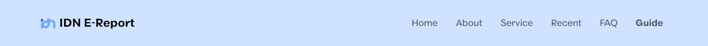
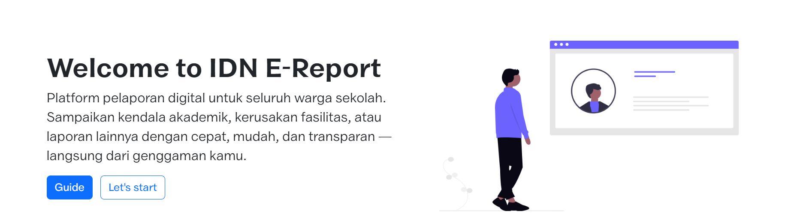
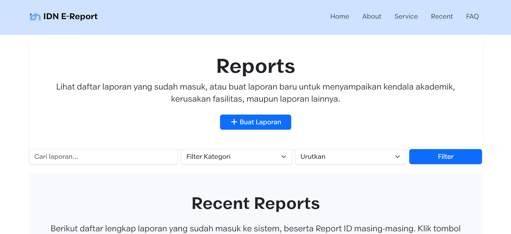
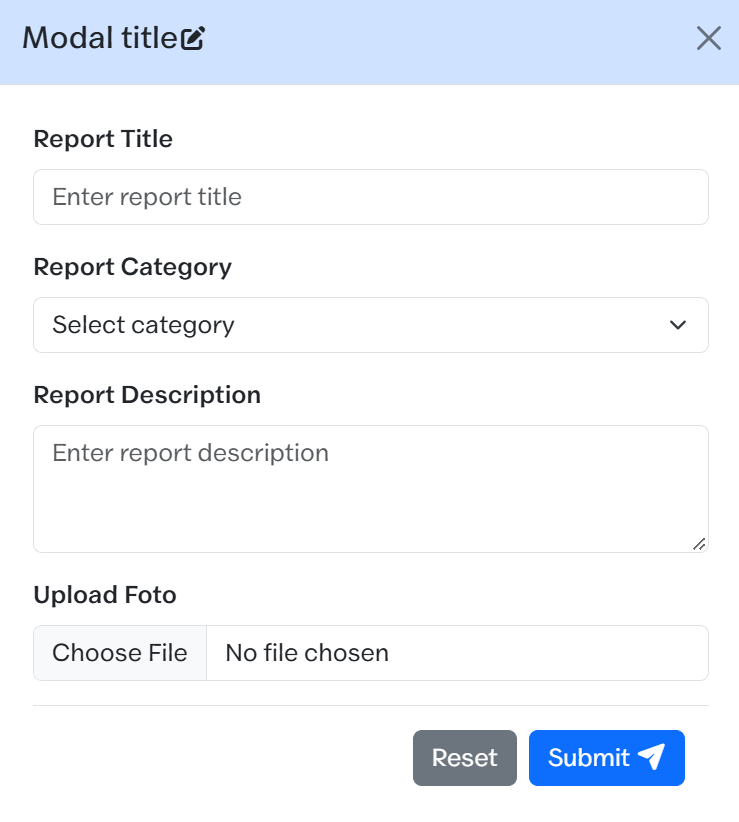
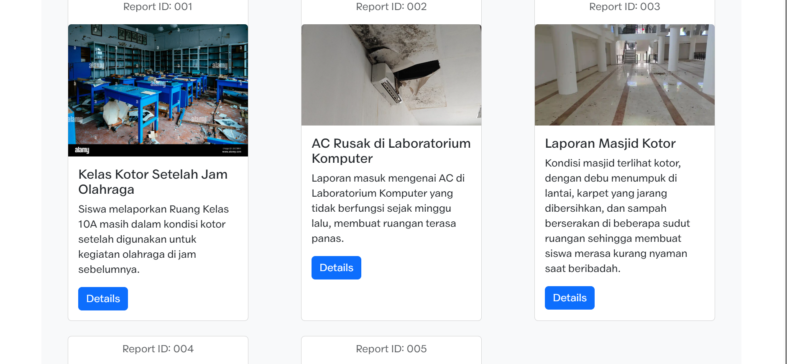

Ikuti langkah-langkah berikut untuk memahami navigasi, cara membuat laporan, dan cara mengecek status laporan kamu.
Saat pertama kali membuka website IDN E-Report, kamu akan melihat halaman utama (Home). Di bagian atas ada navbar dengan menu Home, About, Service, Recent, FAQ, dan Guide. Di bagian Hero juga ada dua tombol: "Guide" untuk membuka panduan ini, dan "Let's start" untuk langsung menuju halaman laporan.

Di halaman utama, klik tombol "Let's start" yang ada
di sebelah tombol "Guide". Kamu akan langsung diarahkan ke halaman
reports.html untuk mulai membuat laporan baru.

Di halaman reports.html, kamu akan melihat daftar
laporan yang sudah pernah dibuat sebelumnya. Untuk membuat laporan baru, klik tombol
"Tambah Laporan" yang ada di halaman tersebut.

Setelah klik "Tambah Laporan", akan muncul form berisi: Report Title (judul laporan), Report Category (pilih kategori laporan dari dropdown), Report Description (jelaskan detail kendala), dan Upload Foto (opsional, unggah foto sebagai bukti pendukung). Isi semua kolom dengan jelas, lalu klik Submit.

Selamat, laporan Anda telah terkirim! Kami akan memprosesnya, lalu menampilkannya di halaman laporan ini agar Anda dan pihak sekolah bisa memantau perkembangannya.
